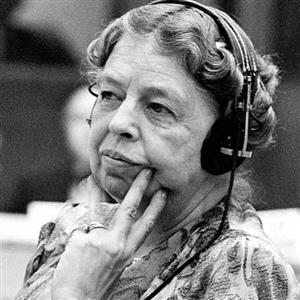

All Human, All Equal' is this year's slogan for Human Rights Day.
PHOTO:© Office of the United Nations High Commissioner for Human Rights

Where, after all, do universal human rights begin? In small places, close to home -- so close and so small that they cannot be seen on any maps of the world. [...] Unless these rights have meaning there, they have little meaning anywhere. Without concerted citizen action to uphold them close to home, we shall look in vain for progress in the larger world.' Eleanor Roosevelt
Human Rights Day is observed every year on 10 December — the day the United Nations General Assembly adopted, in 1948, the Universal Declaration of Human Rights (UDHR). The UDHR is a milestone document, which proclaims the inalienable rights that everyone is entitled to as a human being - regardless of race, colour, religion, sex, language, political or other opinion, national or social origin, property, birth or other status. Available in more than 500 languages, it is the most translated document in the world.
2021 Theme: EQUALITY - Reducing inequalities, advancing human rights
This year’s Human Rights Day theme relates to 'Equality' and Article 1 of the UDHR – “All human beings are born free and equal in dignity and rights.”
The principles of equality and non-discrimination are at the heart of human rights. Equality is aligned with the 2030 Agenda and with the UN approach set out in the document Shared Framework on Leaving No One Behind: Equality and Non-Discrimination at the Heart of Sustainable Development. This includes addressing and finding solutions for deep-rooted forms of discrimination that have affected the most vulnerable people in societies, including women and girls, indigenous peoples, people of African descent, LGBTI people, migrants and people with disabilities, among others.
Equality, inclusion and non-discrimination, in other words - a human rights-based approach to development - is the best way to reduce inequalities and resume our path towards realising the 2030 Agenda.
Rebuild better, fairer, greener
A HUMAN RIGHTS-BASED ECONOMY CAN BREAK CYCLES OF POVERTY
Rampant poverty, pervasive inequalities and structural discrimination are human rights violations and among the greatest global challenges of our time. Addressing them effectively requires measures grounded in human rights, renewed political commitment and participation of all, especially those most affected. We need a new social contract which more fairly shares power, resources and opportunities and sets the foundations of a sustainable human rights-based economy.
REBUILDING FAIRER: A NEW SOCIAL CONTRACT
Human rights, including economic, social and cultural rights as well as the right to development and the right to a safe, clean, healthy and sustainable environment, are central to building a new human rights-based economy that supports better, fairer and more sustainable societies for present and future generations. A human rights-based economy should be the foundation of a new social contract.
EQUAL OPPORTUNITIES FOR YOUTH
Successive financial and health crises have had long-lasting and multidimensional impacts on millions of young people. Unless their rights are protected, including through decent jobs and social protection, the “COVID generation” runs the risk of falling prey to the detrimental effects of mounting inequality and poverty.
REVERSING VACCINE INEQUALITY AND INJUSTICE
Vaccine injustice through unfair vaccine distribution and hoarding contravenes international legal and human rights norms and the spirit of global solidarity. The call for a common agenda and a new social contract between Governments and their people is the need of the hour so as to rebuild trust and to ensure a life of dignity for all.
ADVANCING THE RIGHT TO A HEALTHY ENVIRONMENT AND CLIMATE JUSTICE
Environmental degradation, including climate change, pollution and nature loss, disproportionately impacts persons, groups and peoples in vulnerable situations. These impacts exacerbate existing inequalities and negatively affect the human rights of present and future generations. In follow-up to the HRC’s recognition of the human right to a clean, healthy and sustainable environment, urgent action must be taken to respect, protect and fulfil this right. Such action should be the cornerstone of a new human rights-based economy that will produce a green recovery from COVID-19 and a just transition.
PREVENTING CONFLICT AND BUILDING RESILIENCE THROUGH EQUALITY, INCLUSION AND HUMAN RIGHTS
Human rights have the power to tackle the root causes of conflict and crisis, by addressing grievances, eliminating inequalities and exclusion and allowing people to participate in decision-making that affect their lives. Societies that protect and promote human rights for everyone are more resilient societies, better equipped through human rights to weather unexpected crises such as pandemics and the impacts of the climate crisis. Equality and non-discrimination are key to prevention: all human rights for all ensure everyone has access to the preventive benefits of human rights but, when certain people or groups are excluded or face discrimination, the inequality will drive the cycle of conflict and crisis.
SOURCE: UNITED NATIONS